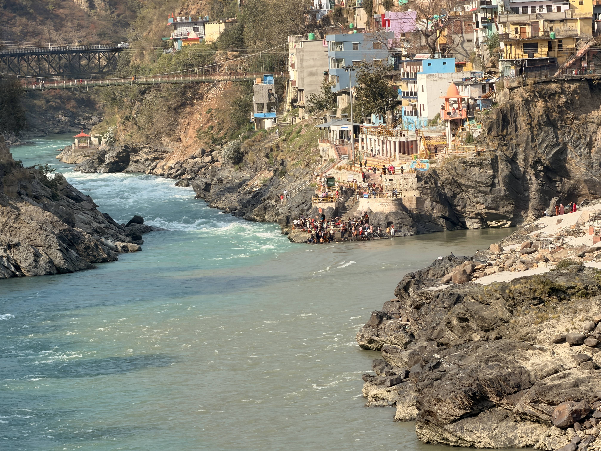

Travel · Western India
Project West
After graduation, the usual corporate routine didn’t feel like enough. While I was training models and figuring out life in general, I kept coming back to the same pull — I like making things and building for people. So I started travelling, mostly through the western part of India, as raw as possible: local transport wherever I could, staying close to the ground to experience life, learn, and explore both the problems and the beauty of it.
stories from the road → @g_tony_g


